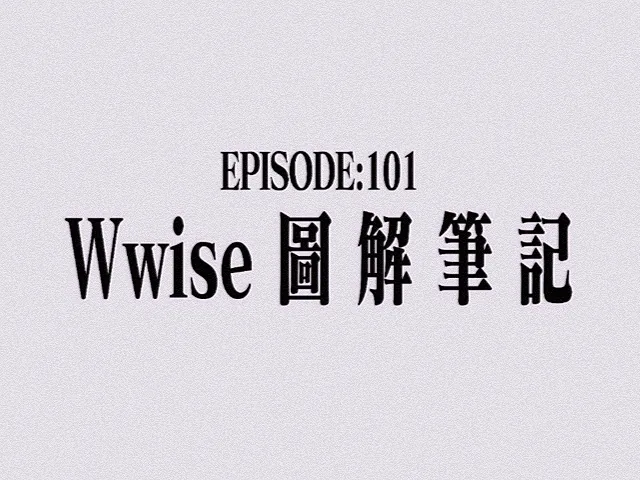

Implement
Wwise 101 实战笔记
写给游戏音频初学者的实战笔记与踩坑记录 · 非官方

实战笔记 · 持续更新
本项目为个人学习笔记与非官方整理，不代表官方观点。
部分内容会包含主观理解与项目经验。
章节可能长期更新、重构、推翻重写。
部分内容会包含主观理解与项目经验。
章节可能长期更新、重构、推翻重写。
核心理念
把工具打磨好，是为了给创意留出更多的空间。
关于风格
- 不是 手册抄写
- 不是 官方文档复读
- 是 一个声音设计师的 实战判断 + 踩坑记录
每一章会围绕一个或者几个核心操作或概念展开，配上：
- 必要的背景引用（动画、游戏、影视）
- "要是有人能早告诉我就好了"的 tips
关于这份笔记
这份笔记可能接近：
"一个刚刚进入游戏音频的人，对 Wwise 的理解与拆解。"
它会包含：
- Wwise 基础与核心逻辑
- 行业内的实际项目组织方式
- Event / RTPC / Switch / State 等系统设计
- 音频资源管理
- 性能与优化
- 部分音频行业理解
01 · Game
Unity / Unreal
脚踩到地面 → 触发一次 Event
02 · Wwise
Event + 参数
RTPC 连续量：距离、强度
Switch 有限状态：材质
State 全局：战斗 / 探索
Switch 有限状态：材质
State 全局：战斗 / 探索
03 · 结构
Actor-Mixer 层级
Random Container 轮换
Blend 按参数混合
Voice 限制与优先级
Blend 按参数混合
Voice 限制与优先级
04 · 输出
Bus → Master
SFX / Music / Voice 分总线
Ducking、Effect、响度归一到 Master
Ducking、Effect、响度归一到 Master
一句话记住这四段：事件决定「什么时候响」，参数决定「响哪一个」，
层级决定「怎么组织」，总线决定「最后怎么混」。
这张图是概念示意，不是我的 Wwise 工程截图——等事件树与 Profiler 证据整理好，会换成真实截图。
章节地图
01
Wwise、袭来
Wwise 初始化、创建工程、音频导入、Events、SoundBank
从零建工程、导音频、发第一个 Event——别逃
02
陌生的、天花板
Sound SFX 复制、Source Editor、属性编辑器、多动作 Events
复制 SFX、改 Source Editor：多动作 Event 是这么练出来的
03
在界面之彼方
Actor-Mixer 层级结构与总线分配
Actor-Mixer 与总线：先把声音放进正确的层级，力场才开得起来
04
只要微笑就好了
RTPC 实时参数控制与 Game Parameter 绑定
RTPC 把参数变成声音：距离、强度、血量——你为谁驾驶 Wwise
05
在静止的黑暗中
State 与 Switch 管理、音乐换轨逻辑
State 与 Switch 换轨：黑雨落下时，音乐该切到哪一轨
06
I WANT TO PLAY A CUBE
Master Audio Bus 与总线架构设计
Master Bus 怎么分：SFX / Music / Voice，先做选择
07
打钩打钩叫叫叫
Mixing Desk 混音台操作与 Effect 路由
混音台与 Effect 路由：在 Mixing Desk 上听通、接对
08
瞬间、声声相印
MIDI 与控制器映射、音乐同步
MIDI 与音乐同步：两条时间轴要多近才不会互相扎到
09
Let master master mastering.
3D 定位与空间音频、Attenuation 曲线
3D 定位与 Attenuation 曲线：让声音在空间里站对位置
10
REI Ⅰ
Speaker Panning 与声道配置
Speaker Panning 与声道配置：声音该从哪只喇叭出来
11
ACOUSTICS_DIVER
Audio Effects 音频效果器应用
Audio Effects 的顺序：EQ、混响、压缩谁先上
12
REI Ⅱ
Performance Analyzer 性能分析器与 Profiling
Profiler 读数：哪里吃 CPU，你能（不能）再往前一步
13
REI Ⅲ
优化策略与 Voice Management
Voice 上限与优先级：别让每个音效都当人偶
14
结束的"4"界
SoundBank 管理与发布策略
SoundBank 打包与发布：一次、两次，第三次要说清楚
15
又幻想了……
Interactive Music 交互音乐系统
Interactive Music：被选中做 Demo 之前，先把分层想清楚
16
在视窗中心呼唤"优化"的野兽
Wwise 与游戏引擎集成（Unity/Unreal）
接进 Unity / Unreal：在引擎里呼唤那声「优化」（鼓掌）
17
我要、退出这个行业
动态对话与语音系统 (Dialogue & Voice)
Dialogue & Voice：对白、本地化、打断规则——先别退出这个行业
18
考验，最后一战
高级 SoundBank 策略与内存管理
高级 SoundBank 与内存：最后一战，别在包体上翻车
目前进度
已完成
全书骨架
进行中
逐章填充
进行中
工程示例
进行中
赞助特典
计划中
English Version
对这份笔记感兴趣？欢迎 联系我 交流讨论。